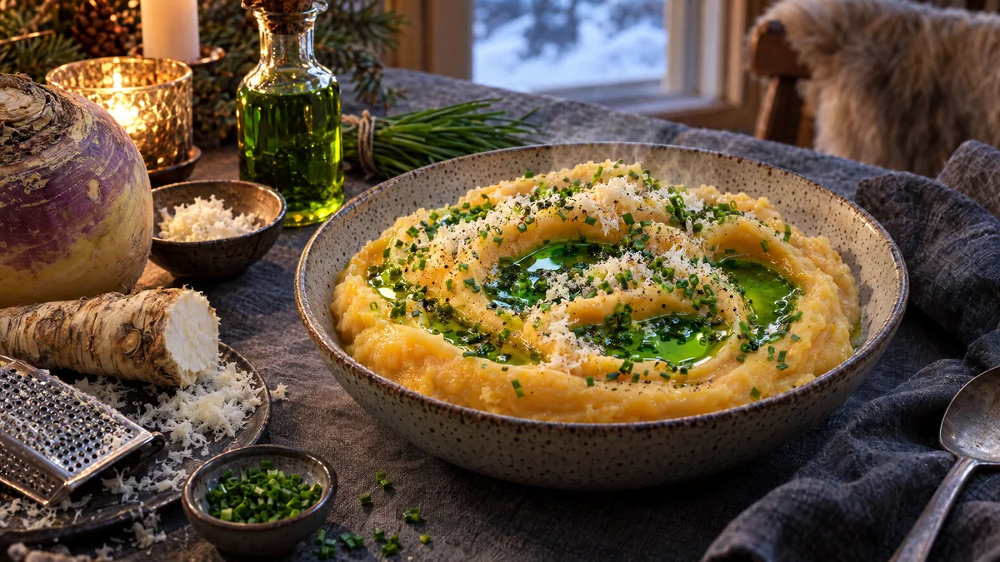

RESTFEST · RECEPTTillbehör
Sammetslent rotmos med pepparrot och gräslöksolja
En kålrot och några potatisar vispas till ett silkeslent mos med smör och färsk riven pepparrot. Moset toppas med en lysande grön gräslöksolja som samlas i små gropar på ytan. Husmanskost som ser ut som från en finkrog.
- Förberedelse
- 20 min
- Tillagning
- 30 min
- Portioner
- 4–6
- Nivå
- Nybörjare
 Det här behöver du
Det här behöver du
Tryck på + vid det du behöver köpa.
Gräslöksolja
Rotmos
Till servering
Gör så här
- Koka upp en kastrull med vatten och ställ fram en skål med isvatten. Doppa gräslöken i det kokande vattnet i 10 sekunder och lägg den direkt i isvattnet. Då behåller den sin klargröna färg.
- Krama ur gräslöken ordentligt, klipp den grovt och mixa den med olja och salt med en stavmixer i 1–2 minuter.
- Sila oljan genom en fin sil eller ett kaffefilter och låt den rinna igenom utan att pressa, ca 15 minuter.
- Skala kålroten och skär den i tärningar, ca 2 cm. Skala potatisen och skär den i tärningar, ca 3 cm.
- Koka kålroten i saltat vatten i 10 minuter. Lägg i potatisen och koka 15–20 minuter till, tills allt är helt mjukt.
- Häll av vattnet ordentligt. Ställ tillbaka kastrullen på plattan i 1–2 minuter så att det sista vattnet ångar bort.
- Mosa med potatisstöt, eller pressa genom en potatispress för det silkeslenaste moset. Använd inte stavmixer, då blir potatisen klistrig.
- Vispa ner smöret och den varma mjölken lite i taget, tills moset är fluffigt. Rör ner pepparroten och smaka av med salt och vitpeppar.
Dekoration och servering
- Bred ut moset i en grund skål och gör svepande gropar med baksidan av en sked.
- Droppa gräslöksolja i groparna, så att den lyser grön mot det ljusorange moset.
- Riv lite färsk pepparrot över precis före servering och strö över klippt gräslök.
- Servera till fläsklägg, korv, köttbullar eller ugnsbakad fisk.
- Överbliven gräslöksolja håller i ca 1 vecka i kylen och är god på soppor och ägg.
Mått och ugnstemperaturer
Måtten är svenska (dl, msk, tsk, krm). Ugnstemperaturerna gäller vanlig ugn med över- och undervärme; med varmluft, sänk med 20 grader.